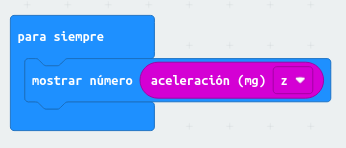

El acelerómetro mide la aceleración de la placa micro:bit. Se activa cuando se mueve la placa y puede detectar acciones como agitar, girar o soltar la placa. Como en el resto de sensores, tenemos una variable que mide la aceleración:
En este caso, podrás observar que hay una lista desplegable para los valores que se corresponde con la aceleración según los ejes X, Y, Z y la fuerza de aceleración. En la siguiente imagen se muestra la dirección de cada eje:
Como ejemplo, mostraremos el valor del acelerómetro según el eje Z usando el siguiente código:

Crea un programa que muestre la fuerza total de la aceleración que se le aplica